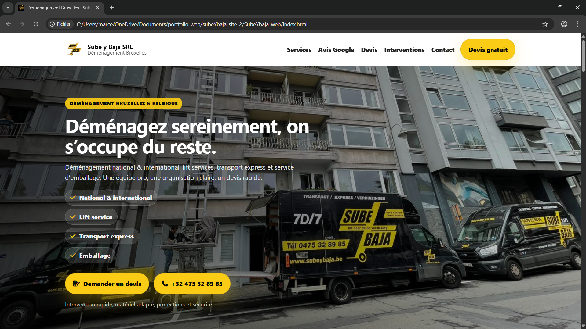

01 / Site d’entreprise · En ligne
Sube y Baja
Présenter les services d’une entreprise de déménagement à Bruxelles et guider les visiteurs vers une demande de devis.
Côté développement : navigation mobile en JavaScript, formulaire de devis connecté à EmailJS et balisage pour le référencement local.